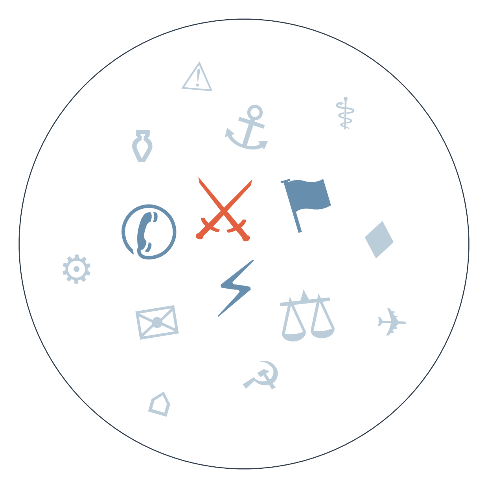

Ранковий бріф · огляд світової преси
Отже, Трамп і Сі Цзіньпін два дні демонстрували у Вашингтоні «дружбу»: узгодили продовження торгового перемир'я до 1 жовтня, говорили про критичні мінерали й штучний інтелект, а Сі публічно попросив Трампа «протидіяти незалежності Тайваню». Реального прориву не сталося — постачання зброї Тайваню на 14 мільярдів доларів (за оцінками Конгресу США) як лежало замороженим, так і лежить, а «здорова конкуренція», про яку говорив Сі, залишається формулою без змісту.
Виявляється, промова Нетаньягу в Генасамблеї ООН обернулась масовим виходом делегацій: він назвав звинувачення в геноциді в Газі «найбільшою брехнею століття» й атакував мера Нью-Йорка Мамдані, Макрона і колишніх союзників. Це поглиблює міжнародну ізоляцію Ізраїлю саме напередодні його власних виборів — і контрастує з внутрішньою критикою Haaretz, яка звинувачує уряд у фокусуванні на «примарних загрозах» замість насильства поселенців.
Макрон оголосив, що Франція надішле військових, радари й системи ППО для захисту саудівського нафтового порту Янбу — після нових атак хуситів, які вже підняли ціни на нафту. Це перша пряма військова залученість європейської держави в оборону інфраструктури Червоного моря, і ризикує втягнути Париж у конфлікт, від участі в якому Макрон публічно відмежовується (тягнеться з середини вересня — ескалація навколо саудівських нафтових об'єктів).
Зеленський заявив, що Україна домовилася про новий пакет ракет для Patriot — це виглядає достроковим частковим підтвердженням очікуваного анонсу після зустрічі з Трампом (детальніше — у Український вимір).
За оцінкою The Africa Report, тиграйські сили та їхні нові союзники захоплюють аеропорти й ключові дороги на півночі Ефіопії, а протистояння переростає у повномасштабну війну проти уряду Абія Ахмеда. Deutsche Welle попереджає про ризик поширення бойових дій по всьому Рогу Африки, поки увага світу прикута до Вашингтона й Нью-Йорка.

Промова Нетаньягу в ООН
Замовчують: майже ніхто, крім Haaretz, не згадує внутрішню ізраїльську критику — що уряд фокусується на «примарних загрозах» замість насильства поселенців і кризи в поліції.
Варто уточнити: усі чотири джерела фактично погоджуються в оцінці самої промови — жорсткої і такої, що спричинила вихід делегацій; розходиться лише градус емоційності подачі, а не сама суть.
Чому розходяться (в тоні): канадський мовник тримає нейтральний тон інституції, що уникає прямих оцінок. Французька преса реагує гостріше, бо мішенню промови особисто став Макрон. Іранська державна агенція зацікавлена показати ізоляцію Ізраїлю як підтвердження власної правоти в конфлікті з Тегераном. Словенське видання з країни, не залученої напряму, дає пряму мову без різких висновків, лишаючи оцінку читачеві.
Саміт Трамп-Сі
Замовчують: конкретний зміст домовленостей щодо ІІ ніхто не розкриває — South African Daily Maverick прямо визнає, що «жодних проривів не сталося».
Варто уточнити: жодне з джерел не заперечує тезу про відсутність прориву — ORF, HKFP, Caixin і EUobserver лише розставляють різні акценти на одній і тій самій події, а не сперечаються про факти.
Чому розходяться (у фокусі): австрійський мовник орієнтується на протокольний перебіг для широкої аудиторії. Канадська преса чутлива до статусу малих союзників США через власні напружені стосунки з Вашингтоном. Гонконгське видання підкреслює жорсткість Пекіна, працюючи в тіні материкового контролю. Китайське бізнес-видання транслює слова Сі майже дослівно — цитата безпечніша за коментар. Брюссельське видання дивиться на зустріч крізь інтереси ЄС, який побоюється лишитися поза грою в перегонах за мінерали.
15.09 очікувались нові санкції США проти постачальників хуситів; окремо, 16.09 трубопровід Схід-Захід у Саудівській Аравії частково відновлено після удару → 22.09 Energy Aspects попереджає, що збої в танкерних перевезеннях можуть тривати до кінця року → 25.09 нові атаки хуситів піднімають ціни на нафту, Франція оголошує відправку військ для захисту порту Янбу (див. Головне) → веде до перетворення Червоного моря на фактичний фронт із залученням європейських армій, а не лише регіональних гравців.
03.09 Словаччина блокує продовження санкційного пакету проти Росії → 19-22.09 голосування знову провалюється, до блокування приєднується Латвія → 25.09 ЄС натомість вводить персональну санкцію проти екс-голови RT France замість великого пакета з Усмановим → веде до заміни системного санкційного тиску точковими символічними жестами, поки основний пакет лишається заручником вето.
Нафта дорожчає після нових атак хуситів на об'єкти Саудівської Аравії — маршрут Червоного моря дедалі більше нагадує зону бойових дій, а не торговельний коридор.
Аргентинська економічна активність (EMAE) впала на 2,9% за місяць у липні — найгірший показник з часів пандемії; міністр Кабальо пояснює це «тимчасовими шоками».
На саміті Трамп-Сі критичні мінерали виявились одним із головних вузлів торгу — Вашингтон намагається швидко скоротити відставання від домінування Пекіна в цій сфері попри продовжене перемир'я.
Поки якісна преса розбирає нюанси саміту Трамп-Сі й промови Нетаньягу, німецький Bild пропонує тижневий гороскоп для всіх дванадцяти знаків і історію про «пані Ламборгіні» з мільйонним бізнесом на догляді за літніми. Польський Fakt паралельно веде власне розслідування про грибника, яку два дні шукали з гелікоптером і собаками — тема, що явно хвилює читачів більше за Генасамблею ООН. Індійський Times Now тим часом ставить в один ряд золото зі стрільби на Азійських іграх і питання, чи можна називати рослинний жир «панір» — це і є справжній порядок денний масового читача.
Шмигаль заявив, що Україна отримала документи з російським планом ударів по енергетиці на цю зиму — це посилює тиск на партнерів прискорити постачання систем ППО й фінансування ремонту мереж до холодів.
Домовленість про новий пакет ракет Patriot (див. Головне) — якщо підтвердиться в деталях, посилить захист від масованих ударів взимку, хоча наразі невідомо, йдеться про новий транш чи вже узгоджені раніше поставки.
Напад у монастирі в Польщі: посол пояснив відсутність національного підґрунтя, підозрюваний перебуває в психлікарні — це знижує ризик короткочасного сплеску ксенофобських настроїв щодо українців у Польщі, поки офіційна версія тримається.
Загроза голоду через кризу судноплавства в Чорному й Червоному морях, за переказом Babel зі світових медіа, може коштувати більше життів, ніж сама війна — але в сьогоднішньому іноземному потоці ця тема практично відсутня як окремий матеріал: її витіснили гучніші картинки саміту Трамп-Сі та промови Нетаньягу.
Ісламістський реванш у Марокко — PJD здобула 54 місця, RNI втратила лідерство (див. Пульс країн) — тему детально розбирає лише The Africa Report; європейська й американська преса цього дня її не помітила, хоча це змінює розклад сил у ключовій країні Магрибу перед формуванням уряду королем.
Масовий розлив нафтопродуктів на пляжах Нідерландів (77 джерел, 29 країн) — попри шалене тиражування, жодне джерело не називає походження забруднення чи винне судно: історія розійшлась як факт екологічної катастрофи, а розслідувати причину, схоже, ніхто не збирається.
Середня впевненість. Ефіопія рухається до повномасштабної громадянської війни з ризиком поширення на Ріг Африки. На основі: The Africa Report, France 24, Deutsche Welle, Al Jazeera — чотири незалежних джерела.
Низька впевненість. Пряма військова присутність Франції в обороні Червоного моря може розширити конфлікт з хуситами на інших європейських гравців. На основі: Le Figaro, Le Monde, Wall Street Journal.
Середня впевненість. ЄС дедалі частіше замінює системні санкційні пакети точковими персональними санкціями через постійне вето Словаччини і тепер Латвії — ознака довгострокового паралічу санкційної політики (див. Що з чого випливає). На основі: Euronews, EUobserver.
Рахунок: 8 з 21 (базово 7 з 21).
Наші:
15.09.2026 горизонт=29.09.2026 | Енергоперемир'я Росія-Україна буде порушене принаймні однією стороною | впевненість=65% | базово=50%
15.09.2026 горизонт=29.09.2026 | США оголосять нові санкції проти структур, пов'язаних із постачанням хуситам | впевненість=55% | базово=40%
15.09.2026 горизонт=29.09.2026 | Перенесена зустріч Ірану з країнами Затоки щодо Ормузу не відбудеться | впевненість=60% | базово=45%
16.09.2026 горизонт=30.09.2026 | Трубопровід Схід-Захід у Саудівській Аравії повністю відновить роботу | впевненість=65% | базово=55%
Кажуть інші:
Goldman Sachs (за Mint, 17.09): ще одне підвищення ставки ФРС очікується в жовтні 2026.
Кремль (за Kommersant, переказ заяв Трампа, 18.09): очікував підписання кількох угод між Трампом і Сі 24 вересня у Вашингтоні — за сьогоднішнім дайджестом частково справдилось: перемир'я продовжено, прориву щодо ІІ не сталося.
Держдепартамент США (за National Post, 21.09): конфлікт довкола атак хуситів на Саудівську Аравію «має потенціал швидко ескалувати».
26-29 вересня — очікується завершення чотириденного візиту Папи Лева XIV до Франції (Париж, Лурд, Мец). 29 вересня — горизонт одразу трьох наших прогнозів: енергоперемир'я Росія-Україна, санкції США проти постачальників хуситів, зустріч Ірану з країнами Затоки. 30 вересня — горизонт прогнозу про повне відновлення трубопроводу Схід-Захід у Саудівській Аравії. 1 жовтня — закінчення продовженого торгового перемир'я США-Китай.
Базова лінія у прогнозах. Відсоток «базово» — це ймовірність події за інерцією, якщо ніхто нічого не робитиме й нічого не зміниться. Друге число — наша впевненість. Прогноз має сенс лише тоді, коли ці числа розходяться: збіг означає, що ми просто описали поточний стан.
Відсотки в карті уваги. Частка країни в денному обсязі зібраних матеріалів. Не показник важливості події, а показник того, скільки місця країна зайняла в новинному потоці за добу. Різкий стрибок частки зазвичай означає, що в країні щось відбувається.